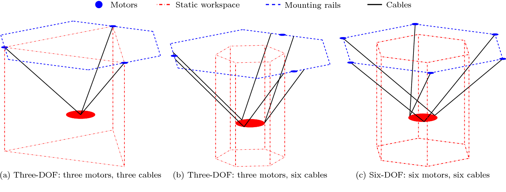
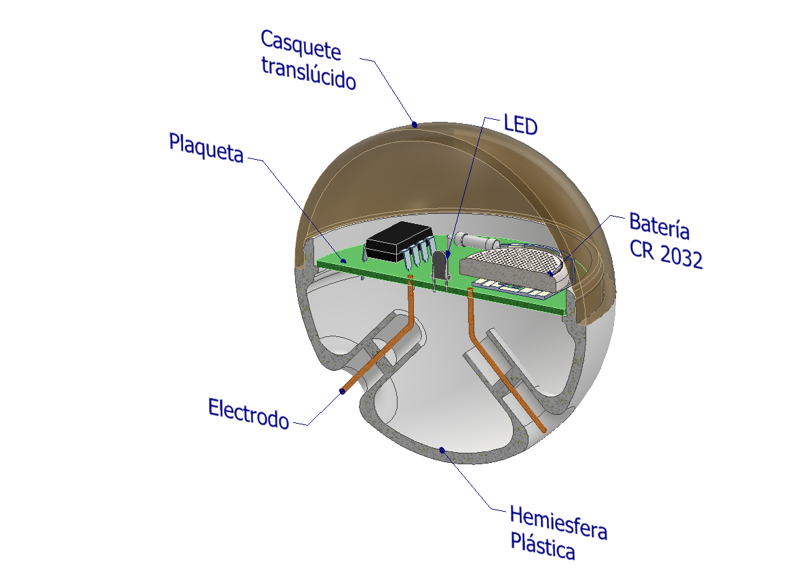
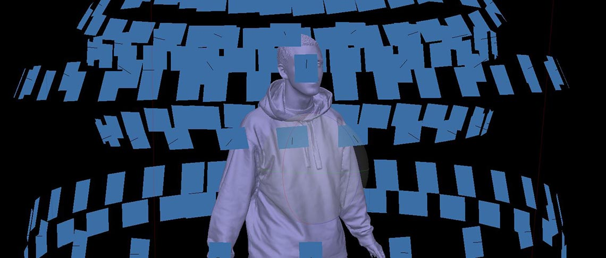

Robot básico
La instalación estaría constituida fundamentalmente por un robot que se desplaza por un espacio físico tridimensional controlado por cables de acero y tres (o seis) motores paso a paso fijados a paredes y/o soportes de pie.
|  |
|---|
| Tipos de robots accionados por cables de acero - Barnett, Gosselin (2015) |
Ese robot porta un Cabezal en el que se instalan los ganchos poteros que "pescarán" los objetos que flotan en un estanque, ubicado en el piso, debajo del robot.
El Cabezal, suspendido en el aire por los cables de acero, podría desplazarse dentro de un espacio cúbico imaginario de alrededor de 3 metros de aristas, lo que determina la medida aproximada que debería tener el estanque.
Dispositivos flotantes
Los dispositivos que flotan en el agua pueden tener diversas formas y tamaños y serán diseñados y modelados uno por uno por los autores, quienes los producirán mediante modelado por deposición de material fundido (FDM).
En principio se prevé una forma básica de esfera, con casquete superior translúcido o transparente para que la luz interior actúe como referencia de "vida". Los dispositivos han sido diseñados para que la luz se encienda cuando están en el agua y se apague apenas sean retirados del líquido (es decir, "pescados" por el robot).
|  |
|---|
| Prototipo básico de "pez" |
Para conseguir este funcionamiento, los dispositivos disponen de dos electrodos inferiores que quedan sumergidos en el agua salada y actúan como sensores de la presencia de líquido. Se planea experimentar con electrodos de distintos materiales, pretendiéndose lograr un "pez" que se active sólo por efecto electrolítico, sin necesidad de batería, aunque se contempla la posible inclusión de una mini batería de tipo botón, si este efecto no fuese suficiente.
Otras posibilidades técnicas del Robot Básico
El robot principal para este proyecto es un desarrollo en curso del área de arte robótico del Laboratorio de Arte Electrónico e Inteligencia Artificial (LAEIA) de la Universidad Nacional de Tres de Febrero (UNTREF) que está a cargo de los autores. Se trata de un dispositivo de cierta importancia, creado para ser aplicado en múltiples proyectos artísticos y re-usado en el futuro.
Cambiando el elemento portado por el Cabezal, el dispositivo robótico planteado permitiría su uso en múltiples diferentes formas de expresión artística. Montando en el mismo una cámara, por ejemplo, puede actuar como un scanner tridimensional de gran escala, para capturar modelos 3D de personas u otros objetos de tamaño similar mediante técnicas de fotogrametría.

Si, en cambio, se le instala un extrusor adecuado, se podrían generar objetos de gran tamaño mediante técnicas similares a las de la impresión 3D utilizando todo tipo de materiales experimentales, en diversas formas creativas.